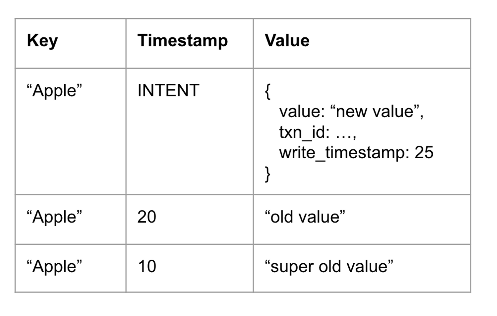
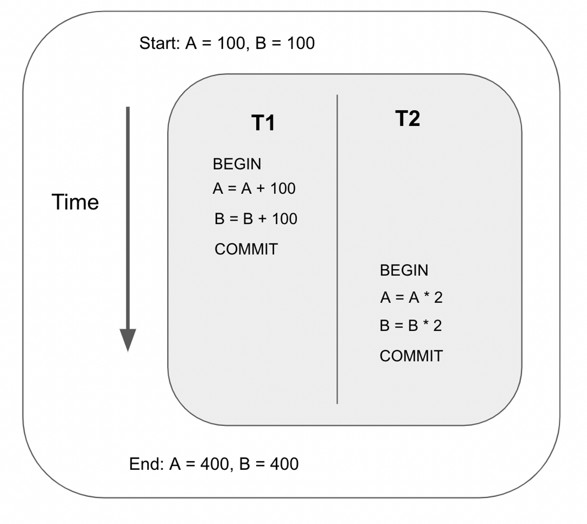
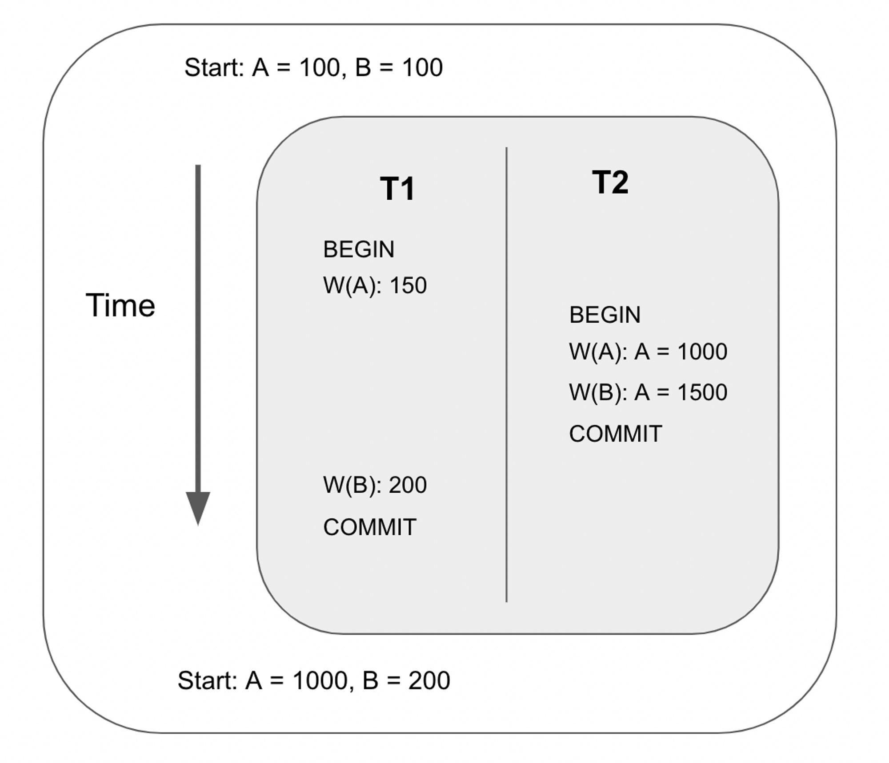
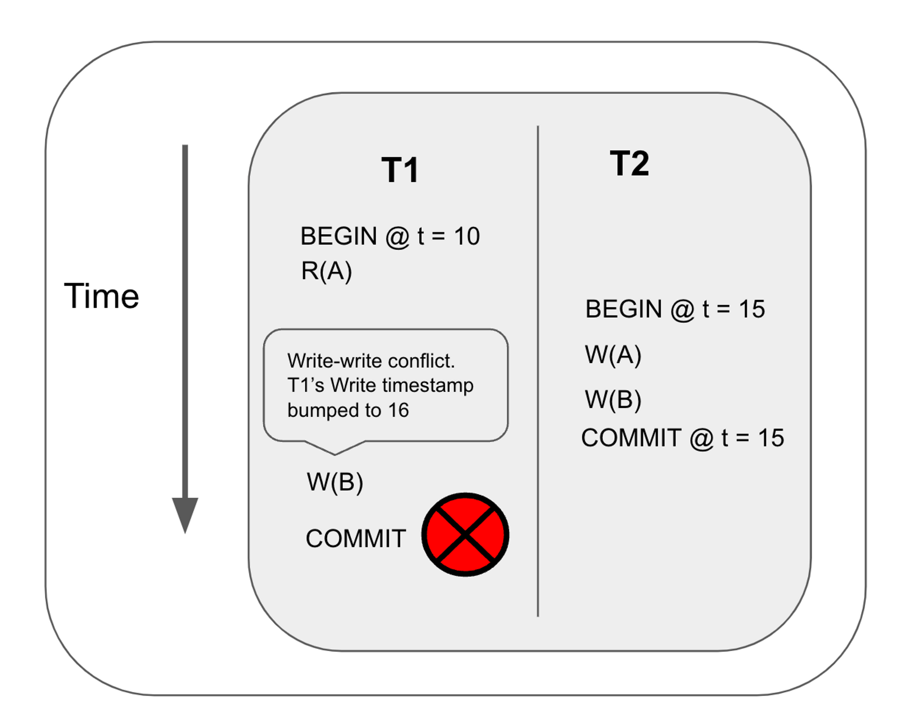

Motivation
Richard Feynman - “What I cannot create, I do not understand”
As someone without a background in databases, I’ve always been curious about the inner workings of transactions in databases such as PostgreSQL and CockroachDB. To better understand this, I decided to build my own transactional key-value database.
Rather than trying to reinvent the wheel, I studied CockroachDB extensively and followed its architecture as closely as possible. For those of you who aren't familiar with what CockroachDB is, it is a distributed SQL database built on top of a transactional key-value store. By following the architecture of CockroachDB's key-value store, I was able to learn in a more structured manner and study its design patterns.
Here is a quick summary of the database I built:
- key-value database
- thread-safe
- uses RocksDB as the storage engine
- written in Rust (my first time learning Rust!)
- support transactions
- SSI (serializable Snapshot Isolation)
- uses MVCC (multi-version concurrency control)
- uses pessimistic write locks and optimistic reads (reads are lock-free)
My motivation for writing this blog series is to solidify my understanding of the project. In this blog series, I will explain the theory behind the database and dive into the implementation details. I will also provide references and summaries for CockroachDB's repo.
The source code is available on GitHub (PRs/suggestions welcome) here
Database API
Let’s first talk about the API of the toy database. The database’s API consists of the following methods:
- set_time
- begin_txn
- write
- read
- read_without_txn
- abort_txn
- commit_txn
- run_txn
Here is an example of using the database:
#![allow(unused)] fn main() { let db = DB::new("./tmp/data", Timestamp::new(10)) let txn1 = db.begin_txn().await; let value = db.read::<i32>("foo", txn1).await.unwrap(); if value == "bar" { db.write("baz", 20, txn1).await.unwrap(); } let commit_result = db.commit_txn(txn1).await; }
In the code snippet above, we created a database by providing a path to specify where to store the records. We then began a transaction, performed a write and a read, then committed the transaction.
An alternative way to perform transactions is with the run_txn method. In the snippet below, the run_txn function automatically begins a transaction and commits the transaction at the end of the function scope. It would also abort the transaction if the inner function panics.
#![allow(unused)] fn main() { db.run_txn(|txn_context| async move { let value = txn_context.read::<i32>("foo").await; if value == "bar" { txn_context.write("foo", 12).await.unwrap(); } }) }
For more examples, feel free to check out the unit tests I wrote for my database.
Thread-safe
The database is thread-safe. If you wrap the database instance around an Arc, you can safely use it across different threads. For example:
#![allow(unused)] fn main() { let db = Arc::new(DB::new("./tmp/data", Timestamp::new(10))); let db_1 = Arc::clone(db); let key1 = "foo"; let key2 = "bar"; let task_1 = tokio::spawn(async move { db_1.run_txn(|txn_context| async move { txn_context.write(key1, 1).await.unwrap(); txn_context.write(key2, 10).await.unwrap(); }) .await }); let db_2 = Arc::clone(db); let task_2 = tokio::spawn(async move { db_2.run_txn(|txn_context| async move { txn_context.write(key1, 2).await.unwrap(); txn_context.write(key2, 20).await.unwrap(); }) .await; }); tokio::try_join!(task_1, task_2).unwrap(); }
In the example above, the serializability of the database guarantees that either all of task1 is executed first or all of task2 is executed first.
Time
The database is powered by a Hybrid Logical Clock (which we will cover later). The developer must manually increment the physical time with the set_time function. But it can also be swapped out with an implementation that uses the system’s time instead.
Core Concepts
Atomicity and isolation are two important traits of transactional databases.
- Atomicity: all of the database operations in a transaction are executed as a single unit (either all of them or none of them are performed).
- Isolation: transactions don’t see intermediate changes of other transactions.
To guarantee atomicity and isolation, I borrowed many concepts from CockroachDB’s architecture, which they outlined in their research paper. The relevant sections include sections 3.2 (Atomicity Guarantees), section 3.3 (Concurrency Control), and section 3.24 (Read Refreshes).
In general, here are some of the core techniques I used to implement transactions
- MVCC
- Write Intents
- Pessimistic writes and optimistic reads
- Read refreshes
Other parts of the blog series will cover topics like the internals of concurrency control, deadlock detection, and hybrid-logical clock.
MVCC
Multiversion concurrency control (MVCC) is an optimization technique used by databases to improve the performance of concurrent operations. The idea behind MVCC is that the database stores multiple versions for each record.
When a record is updated or added, a new entry in the database is added instead of overwriting the original entry. Database reads are performed at a certain version or timestamp. The database returns the most up-to-date record less than or equal to the specified read version.
In the example below, there are 3 different versions of the “Apple” key, each with a different timestamp. The read is performed at timestamp 15. The database returns the result at timestamp 10 since that is the record with the largest timestamp less than 15.

Write Intent
A single transaction may perform multiple writes. Before the transaction is committed, the uncommitted writes must not be read by other transactions. To address this problem, write intent is introduced (I learned about this concept from CockroachDB).
A write intent is a record stored in the MVCC database to represent uncommitted writes. It is given an INTENT timestamp that distinguishes it from normal timestamps. Each key must only have at most one write intent.
In the example above, there is an uncommitted write with an INTENT timestamp for the "Apple" key. The table stores additional metadata, including the transaction ID and the write timestamp, for the write intent.
Transaction Record
A transaction may create multiple write intents. The visibility of the uncommitted intent for a transaction must be flipped atomically. This is the job of transaction records.
The database stores a transaction record for each transaction in a separate database namespace. The key of the transaction records is the transaction ID and the value contains the status and timestamp for each transaction.
When the transaction is committed, the transaction record is marked as committed. All the write intents are readable by other transactions at this moment.

The timestamp in a committed transaction record is the transactions commit timestamp. Since each timestamp in the database is guaranteed to be unique, each committed transaction has a unique commit timestamp. This guarantees serial execution order of transactions.
Concurrency Anomalies
For those familiar with concepts like read-write, write-write, and write-read anomalies, feel free to skip this section!
Interleaving transactions
Databases are allowed to interleave transactions as long as isolation and atomicity are maintained. In other words, it just has to maintain the illusion that the transactions are performed sequentially.
For example, suppose we interleave the following two transactions as follows:

The output of the above ordering is exactly the same as the ordering below. Therefore, the schedule above is a Serializable Schedule, since it is equivalent to some serial execution.
Transaction anomalies
Interleaving transactions may lead to anomalies that break the database’s isolation and atomicity guarantees. There are 3 main types of anomalies:
- read-write conflict
- write-read conflict
- write-write conflict
Read-write conflict
Also known as unrepeatable reads. This happens when two reads of the same transaction yield different results even though the transaction is not responsible for the change in value.

Write-read conflict
Also known as dirty read. This happens when a transaction reads an uncommitted write by another transaction.

Write-write conflict
Also known as overwriting uncommitted data or lost update. This happens when a transaction overwrites another transaction’s uncommitted write. In this example, T1’s first write to key A is lost when transaction 2 commits.
Dealing with Anomalies
CockroachDB outlined its strategy to deal with transaction conflicts in section 3.3 of its research paper. My database uses the same concurrency control techniques outlined in that section.
Commit Timestamp
Each transaction performs its reads and writes at its commit timestamp. This is what guarantees the serializability of transactions. This section covers how a transaction determines its commit timestamp.
A transaction has a read timestamp and a write timestamp. The read/write timestamps are initialized to the timestamp when the transaction is created, which is guaranteed to be unique. The transaction stores the most recent write timestamp as part of the write intent. When the transaction commits, the final write timestamp is used as the commit timestamp.
Usually, the write timestamp for a transaction won’t change. But in some situations, it is required to be bumped. Let’s look at these scenarios.
Dealing with conflicts
Read-write conflict
If a write detects that a read has been performed with a greater timestamp, the write will need to advance its timestamp past the read’s timestamp.
The most recent read timestamp for each key is tracked by the database with the Timestamp Oracle (CockroachDB calls it the TimestampCache). This will be covered in another section.
Write-write conflict
Write-write conflict happens when a write runs into another write, which could be either committed or uncommitted.
There are two scenarios to look at
- the write runs into an uncommitted write intent: the write will need to wait for the other transaction to finalize
- the write runs into a committed write intent: the transaction performing the write needs to advance its timestamp past the committed write intent’s timestamp.
Write-read conflict
Write-read happens when a read runs into an uncommitted write. Two scenarios could occur:
- the uncommitted write intent has a bigger timestamp: the read ignores the intent and returns the key with the biggest timestamp less than the read timestamp.
- the uncommitted write intent has a smaller timestamp: the read needs to wait for the transaction associated with the write intent to be finalized (aborted or committed)
Read Refresh
Read refresh is a technique covered in section 3.4 of CockroachDB’s research paper.
All reads for a transaction are performed at the transaction’s read timestamp. In the last section, we saw that the transaction’s write timestamp can be bumped if it runs into conflicts. Since a transaction commits at the final write timestamp, the read timestamp needs to be advanced when the transaction commits.
However, advancing the read timestamp is not always safe, as in the example below.
In this example, transaction T1 performs a read for key A at timestamp 10. It then performs a write at key B, but it detects a committed write at a higher timestamp, so it advances the timestamp to 16. Finally, it commits. However, this is not safe because it results in a read-write conflict.
When a transaction advances the read timestamp, it must prove that the reads performed at the lower timestamp is still valid at the new timestamp. Suppose the read timestamp is tr and the commit timestamp is tc, the database must prove that the keys read by the transaction have not been updated by another transaction between (tr, tc].
If the database detects that a write has been performed between (tr, tc], the transaction must retry the entire transaction. Otherwise, it is safe to advance its read timestamp to the commit timestamp and commit the transaction. This technique is called read refresh.
Hybrid Logical Clock (HLC)
My original goal was to build a distributed key-value database. I needed a clock that can help me generate unique, increasing MVCC timestamps. After doing some research, I realized that Hybrid Logical Clock (HLC) is what I needed. Even though I ended up just building a single-node key value database, HLC is still useful as it is able to generate unique, incrementing timestamps.
Motivation
Distributed databases need a way to order events and requests. Physical clocks are not reliable as they can go out of sync between servers. Logical clocks can be used to define order across nodes but it does not correlate to physical time. So you cannot perform queries with respect to the physical time.
A hybrid logical clock (HLC) uses a combination of the system timestamp and logical timestamp to have versioned timestamps that can be ordered but still be tied to the physical time.
Algorithm
The correctness and algorithm for Hybrid Logical Clock are presented in this research paper. In this blog, I will focus on the algorithm and not its correctness.
This is the algorithm presented in the paper. Let me explain how it works.

An HLC’s timestamp has a physical timestamp and a logical timestamp. In this algorithm,
l.jrefers to the biggest physical time the node knows so far.c.jrefers to the logical component of the hybrid logical clock, which is used to distinguish two timestamps if their physical component is the same.pt.jrefers to the node’s physical time.
Each HLC has two methods: send_message and receive_message.
receive_message
This method determines the HLC’s time after receiving a message. The idea is that an HLC keeps track of the latest physical timestamp and logical timestamp known to the node. Each time it receives a message, it updates the latest timestamp if the message’s timestamp is greater than the latest timestamp.
- First, set the latest physical timestamp (set l.j) to the max of :
- the current clock’s physical time
- the incoming message’s physical time
- the previous latest physical timestamp.
- Next, determine the logical component of the clock (c.j) as follows:
- If the incoming message’s physical time is the greatest, set the logical clock to the incoming message’s timestamp’s logical time + 1
- If the current clock’s physical timestamp is the greatest, then use 0 as the logical time
- If the original latest_timestamp’s physical time is the greatest, then increment the logical component by one
send_message
This method determines what timestamp to attach to the message sent to other nodes.
- if the current physical time is bigger than the latest physical time, then use the current physical time with the logical clock set to 0
- Otherwise, increment the latest timestamp’s logical time and use that as the timestamp attached to the message
Life of A Query
For reference, check out Life of a SQL Query by CockroachDB which outlines the lifecycle of a single query through the different layers of the database.
This page explains the life cycle of a query that interacts with the following entities of the system:
- Concurrency Manager: Sequences concurrent, conflicting requests to provide isolation. Once a request is sequenced, it is free to execute as no conflicting requests are running at the same time. The concurrency manager is made up of the latch manager, lock table, and transaction wait queue.
- Latch Manager: Serializes accesses for keys. Only one latch guard can be acquired for a key at any given time.
- Lock Table: Hold locks. Each lock corresponds to an uncommitted write by a transaction. Each lock may have a queue of waiting writes and a queue of waiting reads. The lock outlives the request since a transaction is composed of multiple requests.
- Transaction Wait Queue: Stores the pending transactions for each transaction. This queue is responsible for detecting transaction deadlocks when there is a cycle in the “waits-for” graph
- Executor: Executes the request. This involves reading and writing to the MVCC database built on top of RocksDB
- Hybrid Logical Clock: Generates unique, incrementing timestamps that have a wall clock component and a logical component
A Request is a unit of execution in the database. Types of requests include start/abort/commit transaction, read, write, etc. The entry point of a request is execute_request_with_concurrency_retries, which involves a retry loop that attempts to acquire latches/locks and executes the request. If the request runs into write intents, the method handles the write intent and retries.
Acquiring latches and locks
Because the database is thread-safe, the database can receive multiple concurrent requests. Sequence_req is called to acquire latches and locks so that the request has full isolation.
Sequence_req first figures out what latches and locks to acquire by calling collect_spans. Each request implements a collect_spans method that returns the latch/lock keys the request needs to acquire. For example, a WRITE("A)'s collected keys would be: ["A"].
Next, the manager acquires the latches. If the latch is held by another request, the manager needs to wait until the latch is released because each latch can only be acquired by one request at any time.
The manager then tries to acquire locks. If the lock is taken by another transaction, the manager needs to wait for the conflicting transaction to finish (or attempt to push the transaction). While it waits, the request needs to release its acquired latches. This is because latches need to be short-lived.
The manager keeps looping until all the locks have been acquired. Each time it loops, it reacquires the latches.
Once the latch and lock guards are acquired, the executor is ready to execute. At this point, the request has full isolation. Executing read-only requests are slightly different from executing write requests.
Executing read-only requests
As covered in an earlier page, the database tracks the latest read timestamp performed for every key. This way, when a transaction tries to perform a conflicting write, its write timestamp is advanced to the timestamp after the latest read timestamp.
The database uses the timestamp oracle to track all the reads. Therefore, the executor updates the oracle after performing the read.
Executing write requests
Before performing writes, the request may need to bump its write timestamp to prevent read-write or write-write conflict. Therefore, it fetches the latest read timestamp for each key it needs to write from the timestamp oracle. It then advances the transaction’s write_timestamp if necessary. After advancing the write timestamp, it can execute the request.
Performing the Request
Each request implements the execute method which interacts with the storage layer. The storage layer of the database is built on top of RocksDB. As an example, the PutRequest’s execute implementation puts the MVCC key-value record into the storage layer. We will cover the execute method for each request type in more detail later.
Finally, the executor finishes the request - releasing the latch guards and dequeuing the lock guards.
MVCC
Earlier, we covered how MVCC works here. In this section, we will talk about how the MVCC layer is implemented.
In my MVCC database, HLC (hybrid logical clock) timestamps are used to distinguish different versions of the same key. A key with a timestamp is called an MVCCKey.
An MVCCKey is a combination of a Timestamp and a Key:
#![allow(unused)] fn main() { pub struct MVCCKey { pub key: Key, pub timestamp: Timestamp, } }
The timestamp’s structure is:
#![allow(unused)] fn main() { pub struct Timestamp { pub wall_time: u64, pub logical_time: u32, } }
The Key’s type is
#![allow(unused)] fn main() { pub type Key = Vec<u8>; }
The database uses RocksDB as the storage engine. We need to encode the MVCCKey into a RocksDB key. Inspired by CockroachDB EncodeMVCCKey method, the MVCCKey is encoded into the following form:
[key] [wall_time] [logical_time]
Here is the implementation:
#![allow(unused)] fn main() { pub fn encode_mvcc_key(mvcc_key: &MVCCKey) -> Vec<u8> { let mut key_vec = mvcc_key.key.to_vec(); let timestamp_vec = encode_timestamp(mvcc_key.timestamp); key_vec.extend(timestamp_vec); key_vec } pub fn encode_timestamp(timestamp: Timestamp) -> Vec<u8> { let mut wall_time_bytes = timestamp.wall_time.to_le_bytes().to_vec(); let logical_time_bytes = timestamp.logical_time.to_le_bytes().to_vec(); wall_time_bytes.extend(logical_time_bytes); wall_time_bytes } }
Earlier, we covered that a write intent is stored to represent uncommitted writes. A key can only have one write intent at a time. We use the MVCCKey with the zero timestamp: Timestamp { wall_time: 0, logical_time: 0 } to represent the key for a write intent.
When users query for a key, the database returns the latest version of that key. To make this faster, MVCCKeys are sorted from highest timestamp to the lowest timestamp in the storage engine, with the exception of the zero timestamp which is stored before all other versions of the same key.
This is only possible because RocksDB allows developers to customize the order of keys in the table through set_comparator. Here is my implementation of the custom comparator. The comparator gives the highest precedence to the zero timestamp for the same key. Otherwise, it uses the key and the timestamp to order the MVCC keys.
Core APIs
The core API of the MVCC layer includes:
- MVCC_SCAN
- MVCC_GET
- MVCC_PUT
Most interactions with RocksDB are performed with this set of APIs, which are just abstractions over RocksDB’s methods and iterators.
MVCC_SCAN
MVCC_SCAN takes a start key, an end key, and a timestamp as inputs. MVCC_SCAN returns an array of results that contains the keys in the range [start_key, end_key). Only keys with a timestamp less than or equal to the input timestamp is added to the scan results. MVCC_SCAN also collects any write intents that it found along the way.
Algorithm
- It first creates an MVCCIterator, which is a wrapper around RocksDB’s iterator
- It then creates an MVCCScanner with the iterator and performs scan
- The idea behind scan is to first advance the iterator to the intent key of the start key. Write intents have higher precedence than other MVCC keys, so it’s guaranteed that the iterator didn’t skip any keys that may be in the output
- it then keeps advancing the iterator with a loop until the iterator’s current key exceeds the end key
- during each iteration, the scanner checks if the record’s key is an intent key. If it is, add it to found_intents. Otherwise, if the MVCC key’s timestamp is ≤ the input timestamp, add it to the results and advance to the next key. However, if the key’s timestamp is greater than the input timestamp, it must seek an older version of the key
CockroachDB’s MVCCScan
For reference, here is CockroachDB’s implementation of MVCCScan. The core idea is similar. It initializes an mvccScanner, seeks to the start of the scan, and keeps looping until it exceeds the range.
On each iteration, it checks if the key is an intent key by checking if it’s empty. It then checks if the MVCC key’s timestamp is equal to the input timestamp, greater than the input timestamp, or less than the input timestamp, in that case it seeks an older version of the key.
MVCC_GET
MVCC_GET takes a key, a timestamp, and an optional transaction as inputs. It returns the most recent value for the specified key whose timestamp is less than or equal to the supplied timestamp. If it runs into an uncommitted value, it returns a WriteIntentError.
Algorithm
- MVCC_GET is implemented as an MVCC_SCAN where a single key is retrieved. This is achieved by setting both the start key and the end key to the same key.
CockroachDB’s MVCCGet
For reference, here is CockroachDB’s implementation of MVCCGet. The idea to use MVCCScanner is inspired by them. In their implementation, they implement mvcc_get as a scan with start_key = end_key.
MVCC_PUT
MVCC_PUT takes a key, a timestamp, and an optional transaction and tries to insert a timestamped record into the MVCC database. If a transaction is provided, a write intent is placed in the database. Otherwise, the raw value is placed into the database.
Before writing, MVCC_PUT must verify that there are no uncommitted intent for the same key. This is because there can only be a write intent for a key. If an uncommitted intent already exists for the same key, an error is returned.
Algorithm:
-
first, it tries to fetch the intent record
-
if an intent is found, there are 2 scenarios
- the intent’s transaction is the same transaction as the current transaction. In this case, we’re overwriting our own transaction which is acceptable - we don’t do anything
- Otherwise, we check the status of the transaction record that corresponds to the write intent. If the transaction is pending, a WriteIntentError is returned
-
After verifying that there are no uncommitted intent for the same key, we are free to insert into the database.
-
If a transaction is provided, an uncommitted intent is placed into the database. An UncommittedValue contains the value, the transaction ID and the write_timestamp of the transaction at the time of insertion.
-
Otherwise, the raw value is placed into the database.
CockroachDB’s MVCCPut
For reference, here is CockroachDB’s implementation of MVCCPut. The core idea is the same. It checks if an intent was found. If there is an uncommitted write intent whose transaction ID is not the same as the MVCCPut’s transaction’s ID, a WriteIntentError is returned.
Otherwise if the intent’s timestamp is less than the write timestamp, clear it so that MVCCPut can overwrite it. Finally, MVCCPut writes the mvcc value.
[]:
Latch Manager
Latch Manager API
Latch Manager’s job is to serialize access to keys. Latch Manager’s API is composed of two methods: Acquire and Release
Acquire: (keys) → LatchGuard
Acquire takes a set of keys and returns a latch guard. Once the latch guard is obtained, any other calls to Acquire will have to wait until the latch guard is released. In other words, a thread has isolation for the keys after calling Acquire.
Release: (LatchGuard) → ()
Release releases the latch guard, allowing other requests to acquire the latches.
Building a Thread-safe B+ Tree
The Latch Manager is implemented with a thread-safe B+ Tree. Before talking about how the Latch Manager is implemented with a B+ tree, let’s first talk about how the concurrent tree is implemented.
If you’re not interested in learning how the concurrent B+ tree is implemented, scroll down to the section Using the Thread-Safe B+ Tree to implement Latch Manager.
There are plenty of online materials about what B+ trees are so I won’t go into too much detail. In summary, the B+ tree is a self-balancing m-ary tree. A B+ tree is made up of root, internal nodes, and leaf nodes.
B+ tree has a few invariants. For example, every internal node has at least floor(m/2) children, all leaves are at the same distance from the root, etc. To maintain these invariants, nodes may split into multiple nodes, steal from siblings nodes, or merge with sibling/parent nodes during insertion and deletion.
When implementing the B+ tree, I relied heavily on this B+ visualization tool. The visualization tool provides step-by-step visualizations for B+ tree algorithms. For example, here are the steps for a Delete operation.

Latch Crabbing/Coupling
What makes a thread-safe B+ tree different from normal B+ is that a thread-safe B+ tree can be accessed by multiple threads concurrently. If not designed correctly, threads can crash or yield incorrect results if they try to modify the same set of nodes concurrently.
This is where Latch Crabbing (or coupling) comes in. Latch crabbing is a protocol to allow multiple threads to access and modify the B+ tree concurrently. This is covered in CMU’s lecture (check out their lecture slide and video).
Latches are lightweight synchronization objects that protect a data structure from concurrent access. If a read latch for a node, no other threads can perform mutation to that node. If a write latch is held for a node, no other threads can read or write that node.
The idea behind latch crabbing is that when traversing the B+ tree, the thread would get a latch on the parent (starting from the root) before getting a latch on the child node. Then the latch for the parent node is released only if it is safe to do so. It is safe to release the latch for the parent node if it will not split or merge when modified. Whether a node is safe depends on what kind of operation the thread is executing:
Deletion: a node is safe when it is more than half-full (otherwise it will merge with another node when a key is deleted).Insert: a node is safe when it is not full (otherwise it will split when a key is inserted).
In my B+ tree implementation, latches are implemented with RwLocks. Each node is wrapped around a RwLock.
#![allow(unused)] fn main() { pub type LatchNode<K> = Arc<RwLock<Node<K>>>; pub enum Node<K: NodeKey> { Internal(InternalNode<K>), Leaf(LeafNode<K>), } }
Furthermore, each property inside the InternalNode and LeafNode are also wrapped around RwLock to provide interior mutability.
#![allow(unused)] fn main() { pub struct InternalNode<K: NodeKey> { pub keys: RwLock<Vec<K>>, // a key's corresponding left edge will contain nodes with keys stricly less // than the key pub edges: RwLock<Vec<NodeLink<K>>>, pub order: u16, } pub struct LeafNode<K: NodeKey> { pub keys: RwLock<Vec<K>>, pub left_ptr: WeakNodeLink<K>, pub right_ptr: WeakNodeLink<K>, pub order: u16, pub waiters: RwLock<Vec<RwLock<LatchWaiters>>>, } pub type NodeLink<K> = RwLock<Option<LatchNode<K>>>; pub type WeakNodeLink<K> = RwLock<Option<Weak<RwLock<Node<K>>>>>; }
To be honest, I struggled quite a bit implementing the concurrent B+ tree. This was my first time learning Rust and I had to wrestle with the compiler multiple times. One thing I struggled with when implementing insert and delete was finding a way to store the latches.
I originally tried to keep a stack of RwLockWriteGuard as I traversed the tree. But Rust doesn’t compile because the guard at stack[n] references the Arc from stack[n-1]. In Rust, the value and the reference to that value cannot belong to the same struct. It took me a while to realize that taking a recursive approach when implementing tree algorithms in Rust is easier - the recursion creates a stack for us in the form of the call stack.
Going back to latch coupling, this is how we compute whether a node is safe or not during insertion:
#![allow(unused)] fn main() { let is_safe = child_node_size < usize::from(self.order - 1); }
We make sure that the child isn’t at capacity yet so won’t split if a key is inserted.
This is how we compute whether a node is safe or not during deletion.
#![allow(unused)] fn main() { let is_safe = child_has_spare_key & !is_edge_key_the_delete_key && is_ancestor_safe; }
We make sure that the child is at least half full (has spare key) so that it won’t merge with the parent node if a key is deleted.
To clarify, the latches here aren’t the same latches we refer to when we talk about the latch that is acquired through the Acquire method in the Latch Manager. The latches here are used to protect the B+ tree data structure. The latches acquired by a latch manager functions more as a lock.
Writing Unit Tests
When writing unit tests for tree algorithms, I like to write declarative tests. Instead of having to imperatively build a B+ tree to a starting state, I used a test data structure that can be used to generate a B+ tree. For example, here is the code to create a tree.
#![allow(unused)] fn main() { let test_node = TestNode::Internal(TestInternalNode { keys: Vec::from([10]), edges: Vec::from([ Some(TestNode::Leaf(TestLeafNode { keys: Vec::from([5]), })), Some(TestNode::Leaf(TestLeafNode { keys: Vec::from([10, 20]), })), ]), }); let tree = create_test_tree(&test_node, 3); }
After performing the mutation algorithms, I then asserted the resulting B+ tree as follows
#![allow(unused)] fn main() { tree.insert(Range { start_key: 15, end_key: 15, }); let test_node = TestNode::Internal(TestInternalNode { keys: Vec::from([10, 15]), edges: Vec::from([ Some(TestNode::Leaf(TestLeafNode { keys: Vec::from([5]), })), Some(TestNode::Leaf(TestLeafNode { keys: Vec::from([10]), })), Some(TestNode::Leaf(TestLeafNode { keys: Vec::from([15, 20]), })), ]), }); assert_tree(&tree, &test_node); }
Feel free to check out the unit tests I wrote for the my concurrent B+ tree implementation!
Using the Thread-Safe B+ Tree to implement Latch Manager
So far, we’ve mostly talked about how to implement the concurrent B+ tree. Now, let’s talk about how the B+ tree is actually used to implement the Latch Manager API.
Acquire
As a refresher, Acquire takes a set of keys and returns a Latch Guard. Once a latch guard is acquired by a thread, other threads would have to wait until the latch guard is released.
Based on this requirement, there are a few mechanisms we need to design for:
- a thread calling Acquire needs to be able to detect that the latches are currently owned by another thread.
- a thread calling Acquire that is waiting for another thread to release its latches needs to be able to detect when the latch guards are released
Each key inside the B+ tree’s leaf nodes represents an acquired latch. A thread can detect that a latch for a key is acquired by checking if the key exists in the B+ tree.
When a latch is released, the database uses message passing to notify the waiting thread that it can stop waiting.
The B+ tree’s insert API is insert: (key) → LatchKeyGuard.
LatchKeyGuard is an enum:
#![allow(unused)] fn main() { pub enum LatchKeyGuard { Acquired, NotAcquired(LatchGuardWait), } pub struct LatchGuardWait { pub receiver: Receiver<()>, } }
During Acquire, the thread would first try to insert the key into the B+ tree. If the key doesn’t exist in the B+ tree yet, the key is inserted and LatchKeyGuard::Acquired is returned. Otherwise, a channel is created and the sender is queued onto the latch. The function then returns LatchKeyGuard::NotAcquire along with the receiver. The thread can then wait for the receiver to receive a message that the latch has been released. Here is the code for that.
Each key in the LeafNode contains a corresponding LatchWaiters. Each LatchWaiters contain the array of senders, each has a corresponding receiver returned by the Insert method.
#![allow(unused)] fn main() { pub struct LeafNode<K: NodeKey> { pub keys: RwLock<Vec<K>>, ... pub waiters: RwLock<Vec<RwLock<LatchWaiters>>>, } pub struct LatchWaiters { pub senders: Vec<Mutex<Sender<()>>>, } }
Each key in the LeafNode contains a corresponding LatchWaiters. Each LatchWaiters contain an array of senders, which are requests waiting for the latch guard to be released.
Deadlock is possible with this approach. For example, suppose both request 1 and request 2 want to Acquire latches for the keys A and B. If request 1 acquires key A first and request 2 acquires key B first, then a deadlock has occurred since the two requests are blocking each other.
To deal with the deadlock, we use a timeout approach. Acquire would release all guards and retry if the timer times out. There are likely better ways to deal with deadlocks but this was good enough for a MVP.
Release
Release is fairly simple. All it does is that it iterates through the latches that it acquired and deletes it from the B+ tree. The B+ tree would then notify the waiters that the latch is released.
Terminologies
You are probably wondering - the “latches” acquired by the latch manager sounds more like a lock. In fact, if we look at this slide from CMU’s lecture, we can see that latches are supposed to be short-lived and don’t rely on mechanisms such as Waits-for, Timeout, etc.

To clarify, the RwLock protecting the internal nodes of the B+ tree function as latches. The leaf nodes that contain a queue of waiters act more like a lock (though not a transaction lock).
CockroachDB’s Latch Manager
For reference, this is CockroachDB’s API for latch manager. My Latch Manager’s API is inspired by CockroachDB’s Latch Manager API but my implementation is different. In this doc, CockroachDB outlines the evolution of their latch manager implementation.
CockroachDB uses an interval tree of RWMutexes. This CockroachDB PR introduces a BTree implementation based on immutable data structures with copy-on-write mechanisms. I wasn’t able to fully understand how it works but I might revisit and build another implementation for my Latch Manager in the future!
Lock Table

The lock table maintains a set of locks that are held by pending transactions. Each lock in the table contains a wait-queue, where conflicting transactions can queue onto and wait until the lock has been released. In contrast to latches, which exist only for the duration of a request, locks are held for the lifetime of a transaction which may span multiple requests.
As we noted before, each key can only have one uncommitted intent at a time. The lock table guarantees this invariant by ensuring that conflicting transactions are queued while an uncommitted intent is unresolved.
Lock Table API
Scan_and_enqueue: (request, txn) → (bool, LockTableGuard)
This method loops over the keys that the request will access. If it finds a lock for one of the keys, it enqueues the request onto the lock and terminates - returning true and a lock table guard. Returning true here means that the thread needs to wait until the lock is released. Returning false here means that no conflicting locks are detected, and the request is free to perform the writes.
It’s important to note that the latches for the corresponding keys must be held when calling this function.
Wait_for: (lock_table_guard) → Result<(), Error>
This method takes a lock guard and waits until the queued request is at the front of the wait queue. This means that the request is safe to re-acquire latches and rescan the lock table to find any other conflicting locks. This method is also responsible for pushing the transaction if it times out, which may be due to deadlocks.
It’s important to note that this method must be called after latches are dropped.
Add_discovered_lock: (lock_table_guard, txn_intent) → ()
This method is called when an uncommitted intent is discovered during a read or write. It adds the lock guard of the request that found the intent to the wait queue.
Acquire_lock: (key, txn) → ()
This method is called after a write intent is created. It informs the lock table that a new lock has been acquired and other requests need to wait until the lock is released.
It’s important to note that the latch for the key must be held when this method is called.
Dequeue: (lock_table_guard) → ()
This method removes the request from the lock’s wait queues. Note that this method doesn’t release the lock. The only way to release the lock is when the transaction aborts or commits, which resolves the write intent.
Note that latches may or may not be held for this method to be called.
Update_locks: (key, update_lock) → ()
This method updates the lock table when the lock is updated or released, which happens when the transaction has been committed or aborted. This function frees all the queued readers and the first queued writer.
Lock State
Conceptually, Lock Table is just a map from keys to lock states.
Each Lock State contains the queued readers and writers for the lock. This is the struct:
#![allow(unused)] fn main() { pub struct LockState { pub lock_holder: Arc<RwLock<Option<TxnMetadata>>>, pub reservation: Arc<RwLock<Option<LockTableGuardLink>>>, pub queued_writers: Arc<RwLock<Vec<LockTableGuardLink>>>, pub waiting_readers: Arc<RwLock<Vec<LockTableGuardLink>>>, pub last_committed_timestamp: RwLock<Option<Timestamp>>, } }
The lock holder represents whether the lock is held by a transaction. If there is a lock holder, then there is an unresolved uncommitted intent.
Even when the lock_holder is None, which means that the uncommitted intent has been resolved, the lock state may not be cleaned up. This is because there may be pending requests that may add uncommitted intents.
Pending requests take the form of a lock table guard. These requests need to wait for their turn. Read-only requests are placed inside the waiting_readers and write requests are placed inside queued_writers.
When the uncommitted intent has been resolved, all waiting_readers may be released. The reason that all readers can be released is that readers only need to wait if the uncommitted write intent has a smaller timestamp to prevent read-write conflicts. If the read request is able to acquire the latches and perform the read, the next uncommitted write intent will have a greater timestamp since it will consult the timestamp oracle.
On the other hand, only one queued_writers is released. This is because there can only be one uncommitted write intent at a time, so releasing all the writers at once will likely result in conflicts again. When a queued writer is released, it is appointed to be the reservation. Reservation denotes that a write request is in progress and will create an uncommitted intent.
There are a few invariants for the lock state:
- a lock_holder and a reservation cannot exist at the same time
- if the lock_holder is
None, thenwaiting_readersmust be empty
Each lock table guard is 1-1 with a pending request. It’s an abstraction over a channel. A lock table guard has a corresponding receiver and a sender. The sender sends a message when the lock guard has been released. The receiver detects that the lock guard has been released and proceeds with the request.
Implementing the Lock Table API
Now that we know the data structure of the lock table, let’s revisit the API and briefly talk about how each method is implemented.
Scan_and_enqueue: (request, txn) → (bool, LockTableGuard)
This method loops through the request’s keys. If a lock state exists for the key, it checks if it needs to wait for the lock state. Here are the rules determining whether a request needs to wait:
- if a lock holder exists
- if the request is read-only, then it only needs to wait if the uncommitted intent’s timestamp is less than the read’s timestamp
- if the request belongs to the same transaction as the lock holder, it doesn’t need to wait.
- if a lock holder doesn’t exist
- if the request is read-only, it doesn’t have to wait
- If the lock state doesn’t have a reservation, the lock guard claims the reservation and doesn’t need to wait.
- if the reservation and the request belong to the same transaction, then it doesn’t need to wait.
If a request needs to wait, then it queues itself onto the queud_writers and waiting_readers.
Scan_and_enqueue returns true if it doesn’t have to wait for all the keys. Otherwise, it terminates early by returning false with a created lock guard.
Wait_for: (lock_table_guard) → Result<(), Error>
This method simply uses the lock state guard’s receiver to wait until the lock guard has been released. In the case of a deadlock, it detects the deadlock with a timer. In that case, it tries to push the transaction. This will be covered later.
Add_discovered_lock: (lock_table_guard, txn_intent) → ()
This method inserts a lock state into the lock table if one didn’t exist yet. It claims the lock holder. If the request that detected the uncommitted intent is a reader, it pushes itself onto the waiting_readers. Otherwise, it pushes itself onto the queued_writers.
Acquire_lock: (key, txn) → ()
This method updates the lock holder of the lock state. If a reservation exists or if a lock holder with a different transaction ID exists, then there is an error.
Dequeue: (lock_table_guard) → ()
This method removes itself as a reservation if it was the reserver. Otherwise, it removes itself from the queued_writers and waiting_readers.
Update_locks: (key, update_lock) → ()
This method sets the lock_holder to None. It then calls lock_is_free, which clears all waiting_readers and lets the first queued_writer claim itself as the reservation.
CockroachDB’s Implementation
My Lock Table API is very similar to CockroachDB’s Lock Table API, which consists of the same methods such as ScanAndEnqueue, Dequeue, AddDiscoveredLock, AcquireLock, etc.
Unlike my LockTable which uses a simple HashMap, CockroachDB’s lock state is stored in a btree. Other than that, the algorithms are quite similar.
Timestamp Oracle
As mentioned earlier, when a transaction performs a write on a key, its write timestamp must be greater than any read timestamps performed on the same key to prevent read-write conflicts. Therefore, the database needs to track the maximum timestamp that key ranges were read from. That is the job of the timestamp oracle. Timestamp Oracle is a data structure that stores the maximum timestamp that key ranges were read from.
Timestamp oracle is introduced in Yabandeh’s research paper, A Critique of Snapshot Isolation. In the paper, Yabandeh proves that read-write conflict avoidance is sufficient for serializability. For a more detailed explanation of the timestamp oracle, check out this CockroachDB blog and scroll down to the section Read-Write Conflicts – Read Timestamp Cache.
Timestamp Oracle API
The Timestamp Oracle’s API consists of two methods: get_max_timestamp and add
Get_max_timestamp: (start_key, end_key) → Timestamp
The method returns the max timestamp, which overlaps the interval [start_key, end_key].
Add: (timestamp, start_key, end_key) → ()
The method adds the timestamp for the range [start_key, end_key] to the oracle.
Red-Black Tree
The timestamp oracle is implemented with a red-black interval tree. There are plenty of materials online on how to implement a red-black tree, so I won’t go into the details. In summary, a red-black tree is a self-balancing binary search tree in which each node is marked as either black or red. The red-black tree has some invariants around the red and black nodes. The start key of the interval is used to order keys in the red-black tree.
Here is my implementation of the red-black tree.
Implementing the Timestamp Oracle API
Add
Add’s implementation is really simple. It just inserts the interval into the red-black tree.
Get_max_timestamp
First, the function collects all overlap nodes. This is efficient because the timestamp oracle is a Binary Search Tree. Next, the function finds the max timestamp amongst the nodes and returns it.
CockroachDB’s Implementation
CockroachDB calls the timestamp oracle their timestamp cache. CockroachDB’s interface for the timestamp cache is here. They have two implementations for the cache: red-black tree based and BTree based.
CockroachDB’s cache is bounded. It evicts keys if the cache exceeds a certain size It also maintains a “low watermark” that is used whenever GetMax is called but the interval isn’t in the cache. To decide which keys to exceeding, CockroachDB holds a double-linked list of Entry elements. The order of entries is based on the eviction policy, one of which is LRU and another is FIFO. I didn’t bother to implement this in my MVP.
Deadlock Detection
Deadlocks can happen if two conflicting transactions are waiting for each other to finish.

In the example above, T1 performs a write at A then T2 performs a write at B. Then T1 tries to perform a write at B, but the request gets queued to the lock table as T2 holds the lock at B. On the other hand, T2 tries to perform a write at A, but the request gets queued to the lock table as TA holds the lock at A.
At this point, the lock table looks like this:

This is a deadlock as neither transaction can proceed as they are waiting for the other transactions to resolve.
To deal with situations like this, CockroachDB introduced TxnWaitQueue, a data structure that can detect deadlocks.
TxnWaitQueue
TxnWaitQueue is a map from blocking transactions to blocked transactions. We call a blocked transaction a pusher and call a blocking transaction a pushee. In other words, TxnWaitQueue is a map from pushees to a list of pushers.
If we have a three-way deadlock, TxnWaitQueue may look something like this:
txn1 -> [txn2]
txn2 -> [txn3]
txn3 -> [tx1]
Each pusher is wrapped around a data structure called WaitingPush:
#![allow(unused)] fn main() { struct WaitingPush { dependents: RwLock<HashSet<Uuid>>, txn_id: Uuid, /** * Notifies the receiver that the pushTxn request has succeeded. * In other words, the pushee has finalized (aborted or committed) */ sender: Arc<Sender<()>>, /** * The receiver will receive a message if the pushee's transaction * has finalized */ pushee_finalized_receiver: Mutex<Receiver<()>>, } }
The WaitingPush has a property called dependents that tracks the list of transactions that are blocked by the pusher’s transaction.
The TxnWaitQueue is a map from pushees’ transaction IDs to their lists of Vec<WaitingPush>.
The algorithm works as follows:
- a request performing a read or a write detects a conflicting lock so it queues itself to the lock. It starts a timer. If the timer times out before the lock is resolved, the request tries to push the transaction
- the request pushes itself as a
WaitingPushonto the txnWaitQueue. The request’s transaction is the pusher and the lock holder’s transaction is the pushee. The thread would then wait until either the pushee transaction has resolved or if it detects a cycle. - To detect a cycle, the pusher periodically queries for its own transitive dependents. Its transitive dependents are computed by looking up its own list of waitingPushes and each waitingPush’s dependents list. For example, if
txnAqueries for its dependents and thetxnWaitQueueentry fortxnAlooks like this:
#![allow(unused)] fn main() { txnA: [ waitingPush { txn: txnB, dependents: [txnC, txnD] }, waitingPush { txn: txnE, dependents: [txnF] }, waitingPush { txn: txnG, dependents: [txnH, txnI] } ] }
- then the
txnA's transitive dependents are[txnB, txnC, ... txnH, txnI]. If the pusher detects that itspusheeis inside its transitive dependents, then a deadlock is detected as there is cyclic dependency. In that case, it tries to abort thepushee's transaction. - If no deadlock is detected, the pusher updates its own
waitingPush's dependents to be its transitive dependents.
Let’s see how we can use the algorithm to detect a deadlock with a basic example provided by CockroachDB.
Let’s suppose the following happens:
- txnA enters txnB’s txnWaitQueue as a waitingPush
- txnB enters txnC’s txnWaitQueue as a waitingPush
- txnC enters txnA’s txnWaitQueue as a waitingPush
txnA: [
waitingPush { txn: txnC, dependents: [] }
]
txnB: [
waitingPush { txn: txnA, dependents: [] }
]
txnC: [
waitingPush { txn: txnB, dependents: [] }
]
TxnA queries for its dependents and adds it to its waitingPush
txnA: [
waitingPush { txn: txnC, dependents: [] }
]
txnB: [
waitingPush { txn: txnA, dependents: [txnC] }
]
txnC: [
waitingPush { txn: txnB, dependents: [] }
]
TxnB queries for its dependents and adds it to its waitingPush
txnA: [
waitingPush { txn: txnC, dependents: [txnB] }
]
txnB: [
waitingPush { txn: txnA, dependents: [txnC] }
]
txnC: [
waitingPush { txn: txnB, dependents: [txnA, txnC] }
]
TxnB detects that txnC is both a dependent and the pushee, so a deadlock is detected.
From this example, we can see that the intuition behind this algorithm is that each waitingPush's dependent lists keep growing until it detects its own pushee in its dependents list.
TxnWaitQueue API
TxnWaitQueue’s API consists of two methods: wait_for_push and finalize_txn.
wait_for_push: (pusher_txn_id, pushee_txn_id) → Result<PushTxnResponse, WaitForPushError>
This method creates a waitingPush and adds it to its pushee’s waitQueue. It will then wait until either the pushee’s transaction is finalized or a deadlock is detected. To detect a cycle, it starts a separate thread that periodically queries for its dependents.
finalize_txn: (txn_id) → ()
This method is called when a transaction is resolved (aborted or committed). It removes the transaction from the txnWaitQueue and unblocks all pending waitingPushes.
Algorithm Implementation
Inside Concurrency Manager’s SequenceReq, if it detects that it needs to wait for a lock to be released, it calls wait_for on the lock table. When wait_for is called, a timer is created. If it times out before the lock has been released, it calls wait_for_push.
After pushing the pusher onto the pushee’s wait queue, the pusher begins to periodically query for its transitive dependents.
The thread loops until either it detects that the pushee’s transaction has been resolved or a cycle is detected. To accomplish this, the thread listens to two channels with tokio::select!.
The first channel is created by start_query_pusher_txn_dependents which periodically queries for the pusher’s dependents and sends the message to this channel. If a cycle is detected, it aborts the pushee’s transaction by sending a AbortTxn request to the task queue.
The second channel is created when the waitingPush is created. When a transaction is aborted/committed, finalize_txn is called which would loop through the waiting_pushes and send a message to the receiver which would terminate the function.
CockroachDB’s Implementation
The TxnWaitQueue’s data structure and the algorithm to periodically query for the pusher’s transaction are based on CockroachDB’s txnWaitQueue implementation.
Inside sequenceReqWithGuard, if a conflicting lock is found, the concurrency manager calls WaitOn. If WaitOn times out before the lock is released, the thread will try to push the transaction.
MaybeWaitForPush would be called as a result. It creates a waitingPush and pushes the pusher to the pushee’s waitingPushes. It then calls startQueryPusherTxn which periodically queries the pusher’s dependent list and sends the result via the created channel.
WaitForPush listens to a few channels:
- The queryPusherCh, which is the channel created from
startQueryPusherTxn. When the queryPusherCh is signaled, it first checks if the transaction has been finalized, and returns nil if it is. Otherwise,waitForPushchecks for the dependency cycle. A pusher detects a cycle if the pushee’s txn ID is in its own dependents. If there is a dependency, it aborts one of the transactions. - The pending channel is a property on the waitingPush. This channel receives an update whenever the pushee’s queue is cleared.
Concurrency Manager
Concurrency Manager is composed of a latch manager, a lock table, and a txnWaitQueue. Now that we better understand these individual components, we can finally look at how the Concurrency Manager’s API is implemented.
Concurrency Manager API
The API is made up of two methods: sequence_req and finish_req.
Sequence_req: (request) → Result<Guard, SequenceReqError>
Sequence_req provides isolation for the request by acquiring latches and waiting for conflicting locks to be released. Once Sequence_req returns a Guard, the request is guaranteed isolation until the guard is released.
Finish_req: (guard) → ()
Finish_req is called when the request has finished executing. It releases the request from the components of the concurrency manager and allows blocked requests to proceed.
Implementation
Sequence_req
Sequence_req first figures out the keys it needs to acquire latches and locks for. It then creates a loop. Each time it loops, it performs the following:
- it acquires the latches
- it calls the lock table’s
scan_and_enqueuemethod to see if there is a conflicting lock for one of the request’s keys- if there is a conflicting lock, the thread will release the latches and wait until the lock is released. After waiting, it will have become a
reservationfor the lock. In that case, it is free to re-acquire latches and rescan the lock table in the next iteration of the loop. - if there isn’t a conflicting lock, the function stops looping and returns.
- if there is a conflicting lock, the thread will release the latches and wait until the lock is released. After waiting, it will have become a
Finish_req
Finish_req simply releases the latches and dequeues acquired locks from the lock table.
CockroachDB’s Implementation
The core idea behind CockroachDB’s SequenceReq implementation is similar to my implementation. The difference is that it has different modes, such as OptimisticEval and PessimisticEval. If the mode is OptimisticEval, it calls AcquireOptimistic which does not wait for conflicting latches to be released. It needs to be followed with CheckOptimisticNoConflicts to ensure correctness.
My implementation is more similar to the pessimistic evaluation approach, which acquires latches. CockroachDB’s SequenceReq then calls ScanAndEnqueue to find conflicting locks. If a conflicting lock is found, WaitOn is called, which waits until the lock is released or pushes the transaction if it times out.
Executing the Request
During the lifetime of a request, the request can finally be executed after concurrency manager calls sequence_req. In this section, we finally get to look at how the requests are executed.
These are the request types of the database:
- BeginTxn
- CommitTxn
- AbortTxn
- Get
- Put
Each command needs to implement an execute method. Here are its implementations:
BeginTxn
- BeginTxn simply creates a transaction record with the txn’s timestamp.
CommitTxn
-
CommitTxn first fetches the transaction record. If the transaction record is aborted, it returns an error.
-
Otherwise, it begins committing the transaction. Firstly, it needs to
perform a read refresh
to advance the read timestamp to the write timestamp. If you need a “refresher” on read refresh, look at
this page
.
- If the read refresh is unsuccessful, it returns a ReadRefreshError, which would restart the transaction.
- If read refresh is successful, it updates the transaction record to be committed.
-
Next, it resolves the uncommitted intent, which replaces it with a proper MVCC key value with the transaction’s commit timestamp.
-
Next, it releases the locks held by the transaction
-
Finally, it removes itself from the TxnWaitQueue in case it was queued
AbortTxn
- AbortTxn first makes sure the transaction record isn’t committed
- Next, it updates the transaction record to abort
- It then removes all uncommitted intents from the MVCC database
- Next, it releases the locks held by the transaction
- Finally, it removes itself from the TxnWaitQueue in case it was queued
Get
- Get first uses the read timestamp to perform a mvcc_get to retrieve the most recent value for the key.
- If mvcc_get returns an uncommitted intent, it checks if the request’s transaction and the intent’s transaction are the same. In that case, the transaction is reading its uncommitted write so it can proceed.
- Otherwise, Get returns a WriteIntentError
- Next, the function adds the key to the read sets to the transaction so that a read refresh can be performed later if the write timestamp gets bumped.
- Finally, it returns the value.
Put
- Put uses mvcc_put to attempt to put an uncommitted intent into the database.
- If mvcc_put is successful, it adds the uncommitted intent to the lock table by calling acquire_lock
- Otherwise, this means that an uncommitted intent was detected. Since there can only be one uncommitted intent for each key, the function returns a WriteIntentError